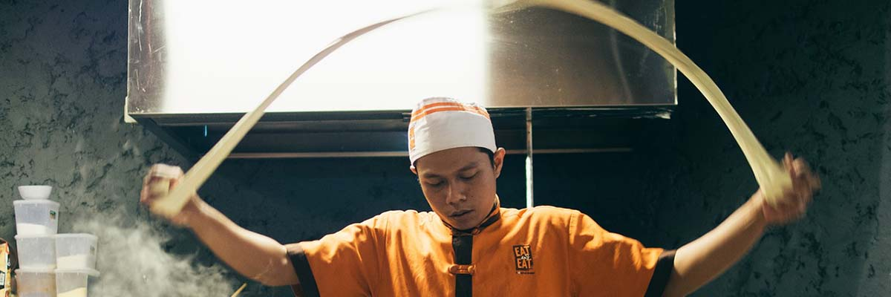

Modern Fusion Bar & Kitchen
Our Menu
Cater With Us
We cater weddings, business lunches, dinners, and more. Call us to discuss how we can be a pert of your next event.

Local Cuisine
We refuse to compromise on quality. Our fresh ingredients are local and we are committed to serving fresh cuisine.
Chef Ly
With 20 years of experience cooking in the finest restaurants, Chef Ly is committed to serving fresh food and unique experiences.